Lecciones de circuitos eléctricos - Volumen II
Capítulo 11
FACTOR DE POTENCIA
- Power in resistive and reactive AC circuits
- True, Reactive, and Apparent power
- Calculating power factor
- Practical power factor correction
- Contributors
Power in resistive and reactive AC circuits
Considere un circuito para un sistema de alimentación de CA monofásico, donde una fuente de voltaje de CA de 120 voltios y 60 Hz entrega energía a una carga resistiva: (Figura below)
{kind=link}
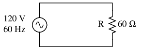
La fuente de CA impulsa una carga puramente resistiva.
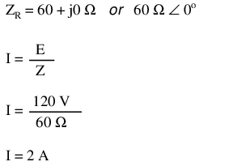
En este ejemplo, la corriente a la carga sería de 2 amperios, RMS. La potencia disipada en la carga sería de 240 vatios. Debido a que esta carga es puramente resistiva (sin reactancia), la corriente está en fase con el voltaje y los cálculos son similares a los de un circuito de CC equivalente. Si tuviéramos que trazar las formas de onda de voltaje, corriente y potencia para este circuito, se vería como en la Figura below.
{kind=link}
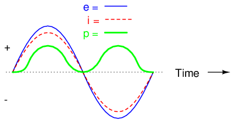
La corriente está en fase con el voltaje en un circuito resistivo.
Tenga en cuenta que la forma de onda de potencia siempre es positiva, nunca negativa para este circuito resistivo. Esto significa que la carga resistiva siempre disipa la energía y nunca regresa a la fuente como ocurre con las cargas reactivas. Si la fuente fuera un generador mecánico, se necesitarían 240 vatios de energía mecánica (aproximadamente 1/3 de caballo de fuerza) para hacer girar el eje.
¡Tenga en cuenta también que la forma de onda de la energía no tiene la misma frecuencia que el voltaje o la corriente! Más bien, su frecuencia esdobleel de las formas de onda de voltaje o corriente. Esta frecuencia diferente prohíbe nuestra expresión de potencia en un circuito de CA usando la misma notación compleja (rectangular o polar) que se usa para voltaje, corriente e impedancia, porque esta forma de simbolismo matemático implica relaciones de fase inmutables. Cuando las frecuencias no son las mismas, las relaciones de fase cambian constantemente.
Por extraño que parezca, la mejor manera de proceder con los cálculos de potencia de CA es utilizarescalarnotación y para manejar cualquier relación de fase relevante con trigonometría.
A modo de comparación, consideremos un circuito de CA simple con una carga puramente reactiva en la Figura below.
{kind=link}
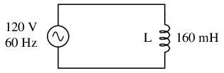
Circuito de CA con carga puramente reactiva (inductiva).
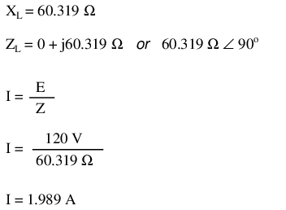
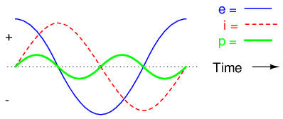
La energía no se disipa en una carga puramente reactiva. Aunque alternativamente se absorbe y regresa a la fuente.
Tenga en cuenta que el poder alterna igualmente entre ciclos positivos y negativos. (Cifra above) Esto significa que la energía se absorbe y devuelve alternativamente a la fuente. Si la fuente fuera un generador mecánico, no se necesitaría (prácticamente) energía mecánica neta para hacer girar el eje, porque la carga no utilizaría energía. El eje del generador sería fácil de hacer girar y el inductor no se calentaría como lo haría una resistencia.
{kind=link}
Ahora, consideremos un circuito de CA con una carga que consta de inductancia y resistencia en la Figura below.
{kind=link}
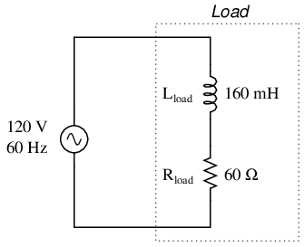
Circuito de CA con reactancia y resistencia.
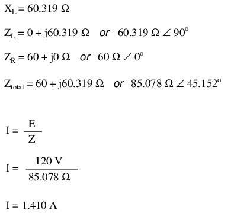
A una frecuencia de 60 Hz, los 160 milihenrios de inductancia nos dan 60,319 Ω de reactancia inductiva. Esta reactancia se combina con los 60 Ω de resistencia para formar una impedancia de carga total de 60 + j60,319 Ω, o 85,078 Ω ∠ 45,152o. Si no nos preocupan los ángulos de fase (que no nos preocupan en este punto), podemos calcular la corriente en el circuito tomando la magnitud polar de la fuente de voltaje (120 voltios) y dividiéndola por la magnitud polar de la impedancia (85.078 Ω). Con una tensión de alimentación de 120 voltios RMS, nuestra corriente de carga es de 1.410 amperios. Esta es la cifra que indicaría un amperímetro RMS si estuviera conectado en serie con la resistencia y el inductor.
Ya sabemos que los componentes reactivos disipan energía cero, ya que absorben y devuelven energía por igual al resto del circuito. Por lo tanto, cualquier reactancia inductiva en esta carga también disipará potencia cero. Lo único que queda para disipar energía aquí es la porción resistiva de la impedancia de carga. Si observamos el gráfico de forma de onda de voltaje, corriente y potencia total para este circuito, vemos cómo funciona esta combinación en la Figura below.
{kind=link}
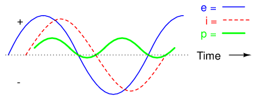
Un circuito combinado resistivo/reactivo disipa más potencia de la que devuelve a la fuente. La reactancia no disipa energía; sin embargo, la resistencia sí.
Como ocurre con cualquier circuito reactivo, la potencia alterna entre valores instantáneos positivos y negativos a lo largo del tiempo. En un circuito puramente reactivo, la alternancia entre potencia positiva y negativa se divide equitativamente, lo que da como resultado una disipación de potencia neta de cero. Sin embargo, en circuitos con resistencia y reactancia mixtas como este, la forma de onda de potencia seguirá alternando entre positiva y negativa, pero la cantidad de potencia positiva excederá la cantidad de potencia negativa. En otras palabras, la carga combinada inductiva/resistiva consumirá más energía de la que regresa a la fuente.
Al observar el gráfico de forma de onda para la potencia, debería ser evidente que la onda pasa más tiempo en el lado positivo de la línea central que en el negativo, lo que indica que la carga absorbe más energía de la que regresa al circuito. El poco retorno de energía que se produce se debe a la reactancia; El desequilibrio entre potencia positiva y negativa se debe a la resistencia, ya que disipa energía fuera del circuito (generalmente en forma de calor). Si la fuente fuera un generador mecánico, la cantidad de energía mecánica necesaria para hacer girar el eje sería la cantidad de potencia promediada entre los ciclos de potencia positivo y negativo.
Representar matemáticamente la potencia en un circuito de CA es un desafío, porque la onda de potencia no tiene la misma frecuencia que el voltaje o la corriente. Además, el ángulo de fase de la potencia significa algo muy diferente del ángulo de fase del voltaje o la corriente. Mientras que el ángulo para el voltaje o la corriente representa una relacióncambio en el tiempoentre dos ondas, el ángulo de fase de la potencia representa unarelaciónentre potencia disipada y potencia devuelta. Debido a esta forma en que la potencia de CA difiere del voltaje o la corriente de CA, en realidad es más fácil llegar a cifras de potencia calculando conescalarcantidades de voltaje, corriente, resistencia y reactancia que tratar de derivarlas devector, ocomplejocantidades de voltaje, corriente e impedancia con las que hemos trabajado hasta ahora.
- REVISAR:
- En un circuito puramente resistivo, toda la potencia del circuito es disipada por las resistencias. El voltaje y la corriente están en fase entre sí.
- En un circuito puramente reactivo, las cargas no disipan potencia del circuito. Más bien, la energía se absorbe y regresa alternativamente a la fuente de CA. El voltaje y la corriente son 90odesfasados entre sí.
- En un circuito que consta de resistencia y reactancia mezcladas, las cargas disiparán más energía que la devuelta, pero definitivamente se disipará algo de energía y otra simplemente se absorberá y devolverá. El voltaje y la corriente en dicho circuito estarán desfasados en un valor entre 0 yoy 90o.
True, Reactive, and Apparent power
Sabemos que las cargas reactivas, como los inductores y los condensadores, disipan energía cero, pero el hecho de que disminuyan el voltaje y consuman corriente da la impresión engañosa de que en realidad no lo hacen.dodisipar el poder. Este "poder fantasma" se llamapotencia reactiva, y se mide en una unidad llamadaVoltios-amperios-reactivos(VAR), en lugar de vatios. El símbolo matemático de la potencia reactiva es (desafortunadamente) la letra mayúscula Q. La cantidad real de potencia que se utiliza o se disipa en un circuito se llamaverdadero poder, y se mide en vatios (simbolizado por la letra P mayúscula, como siempre). La combinación de potencia reactiva y potencia verdadera se llamapoder aparente, y es el producto del voltaje y la corriente de un circuito, sin referencia al ángulo de fase. La potencia aparente se mide en la unidad deVoltios-amperios(VA) y está simbolizado por la letra S mayúscula.
Como regla general, la potencia verdadera es función de los elementos disipativos de un circuito, generalmente resistencias (R). La potencia reactiva es función de la reactancia de un circuito (X). La potencia aparente es función de la impedancia total de un circuito (Z). Dado que estamos tratando con cantidades escalares para el cálculo de potencia, cualquier cantidad inicial compleja como voltaje, corriente e impedancia debe representarse por sumagnitudes polares, no por componentes rectangulares reales o imaginarios. Por ejemplo, si estoy calculando la potencia verdadera a partir de la corriente y la resistencia, debo usar la magnitud polar de la corriente, y no simplemente la porción "real" o "imaginaria" de la corriente. Si estoy calculando la potencia aparente a partir del voltaje y la impedancia, ambas cantidades anteriormente complejas deben reducirse a sus magnitudes polares para la aritmética escalar.
Existen varias ecuaciones de potencia que relacionan los tres tipos de potencia con la resistencia, la reactancia y la impedancia (todas utilizando cantidades escalares):
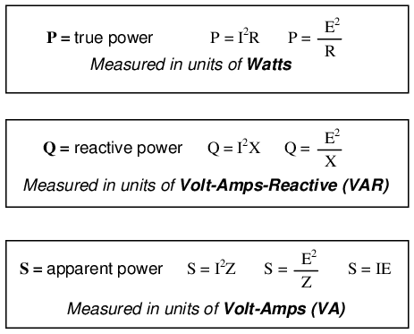
Tenga en cuenta que existen dos ecuaciones cada una para calcular la potencia verdadera y la reactiva. Hay tres ecuaciones disponibles para el cálculo de la potencia aparente, siendo útil P=IEsolopara ese propósito. Examine los siguientes circuitos y vea cómo estos tres tipos de energía se interrelacionan para: una carga puramente resistiva en la Figura below, una carga puramente reactiva en la figura below, y una carga resistiva/reactiva en la Figura below.
{kind=link}
{kind=link}
{kind=link}
Sólo carga resistiva:
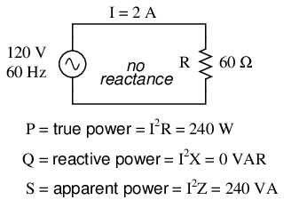
Potencia verdadera, potencia reactiva y potencia aparente para una carga puramente resistiva.
Sólo carga reactiva:
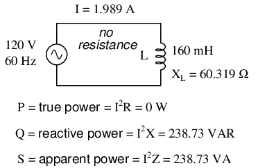
Potencia verdadera, potencia reactiva y potencia aparente para una carga puramente reactiva.
Carga resistiva/reactiva:
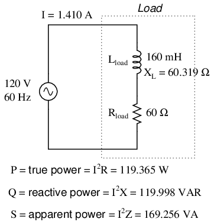
Potencia verdadera, potencia reactiva y potencia aparente para una carga resistiva/reactiva.
Estos tres tipos de potencia (verdadera, reactiva y aparente) se relacionan entre sí en forma trigonométrica. A esto lo llamamos eltriangulo de poder: (Cifra below).
{kind=link}
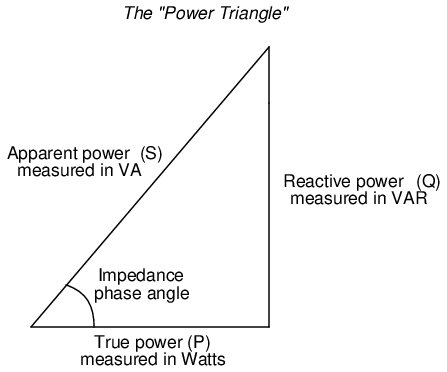
Triángulo de potencia que relaciona la potencia aparente con la potencia verdadera y la potencia reactiva.
Usando las leyes de la trigonometría, podemos resolver la longitud de cualquier lado (cantidad de cualquier tipo de potencia), dadas las longitudes de los otros dos lados, o la longitud de un lado y un ángulo.
- REVISAR:
- La potencia disipada por una carga se denominaverdadero poder. La verdadera potencia está simbolizada por la letra P y se mide en vatios (W).
- La energía simplemente absorbida y devuelta en la carga debido a sus propiedades reactivas se conoce comopotencia reactiva. La potencia reactiva está simbolizada por la letra Q y se mide en la unidad Volt-Amps-Reactive (VAR).
- La potencia total en un circuito de CA, tanto disipada como absorbida/devuelta, se denominapoder aparente. La potencia aparente está simbolizada por la letra S y se mide en la unidad de voltios-amperios (VA).
- Estos tres tipos de potencia están relacionados trigonométricamente entre sí. En un triángulo rectángulo, P = longitud adyacente, Q = longitud opuesta y S = longitud de la hipotenusa. El ángulo opuesto es igual al ángulo de fase de impedancia (Z) del circuito.
Calculating power factor
Como se mencionó anteriormente, el ángulo de este “triángulo de potencia” indica gráficamente la relación entre la cantidad de disipado (oconsumado) potencia y la cantidad de potencia absorbida/devuelta. También resulta ser el mismo ángulo que el de la impedancia del circuito en forma polar. Cuando se expresa como fracción, esta relación entre la potencia verdadera y la potencia aparente se llamafactor de potenciapara este circuito. Debido a que la potencia verdadera y la potencia aparente forman los lados adyacente y de la hipotenusa de un triángulo rectángulo, respectivamente, la relación del factor de potencia también es igual al coseno de ese ángulo de fase. Usando valores del último circuito de ejemplo:
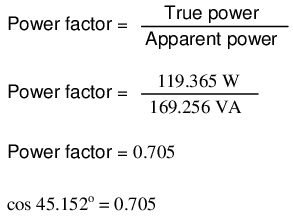
Cabe señalar que el factor de potencia, como todas las mediciones de relación, es unasin unidadescantidad.
Para el circuito puramente resistivo, el factor de potencia es 1 (perfecto), porque la potencia reactiva es igual a cero. Aquí, el triángulo de potencia se vería como una línea horizontal, porque el lado opuesto (potencia reactiva) tendría longitud cero.
Para el circuito puramente inductivo, el factor de potencia es cero, porque la potencia verdadera es igual a cero. Aquí, el triángulo de poder se vería como una línea vertical, porque el lado adyacente (el poder verdadero) tendría longitud cero.
Lo mismo podría decirse de un circuito puramente capacitivo. Si no hay componentes disipativos (resistivos) en el circuito, entonces la potencia verdadera debe ser igual a cero, haciendo que cualquier potencia en el circuito sea puramente reactiva. El triángulo de potencia para un circuito puramente capacitivo sería nuevamente una línea vertical (apuntando hacia abajo en lugar de hacia arriba como lo era para el circuito puramente inductivo).
El factor de potencia puede ser un aspecto importante a considerar en un circuito de CA, porque cualquier factor de potencia menor que 1 significa que el cableado del circuito tiene que transportar más corriente de la que sería necesaria con cero reactancia en el circuito para entregar la misma cantidad de potencia (verdadera) a la carga resistiva. Si nuestro último circuito de ejemplo hubiera sido puramente resistivo, habríamos podido entregar 169,256 vatios completos a la carga con los mismos 1,410 amperios de corriente, en lugar de los meros 119,365 vatios que actualmente disipa con la misma cantidad de corriente. El bajo factor de potencia genera un sistema de suministro de energía ineficiente.
Paradójicamente, un factor de potencia deficiente se puede corregir agregando otra carga al circuito que consume una cantidad igual y opuesta de potencia reactiva, para cancelar los efectos de la reactancia inductiva de la carga. La reactancia inductiva sólo puede cancelarse mediante la reactancia capacitiva, por lo que tenemos que agregar unacondensadoren paralelo a nuestro circuito de ejemplo como carga adicional. El efecto de estas dos reactancias opuestas en paralelo es igualar la impedancia total del circuito a su resistencia total (para hacer que el ángulo de fase de la impedancia sea igual, o al menos más cercano, a cero).
Como sabemos que la potencia reactiva (sin corregir) es 119,998 VAR (inductiva), necesitamos calcular el tamaño correcto del capacitor para producir la misma cantidad de potencia reactiva (capacitiva). Dado que este condensador estará directamente en paralelo con la fuente (de voltaje conocido), usaremos la fórmula de potencia que comienza con el voltaje y la reactancia:
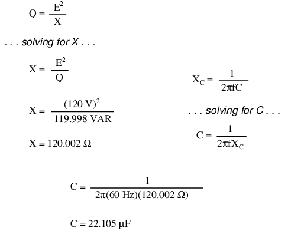
Usemos un valor de capacitor redondeado de 22 µF y veamos qué sucede con nuestro circuito: (Figura below)
{kind=link}
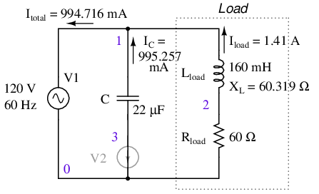
El condensador paralelo corrige el factor de potencia retrasado de la carga inductiva. V2 y los números de nodo: 0, 1, 2 y 3 están relacionados con SPICE y pueden ignorarse por el momento.
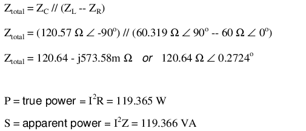
El factor de potencia del circuito, en general, se ha mejorado sustancialmente. La corriente principal se redujo de 1,41 amperios a 994,7 miliamperios, mientras que la potencia disipada en la resistencia de carga permanece sin cambios en 119,365 vatios. El factor de potencia está mucho más cerca de ser 1:
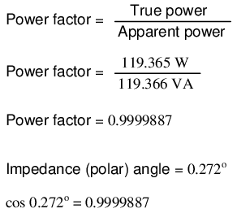
Dado que el ángulo de impedancia sigue siendo un número positivo, sabemos que el circuito, en general, es aún más inductivo que capacitivo. Si nuestros esfuerzos de corrección del factor de potencia hubieran sido perfectamente acertados, habríamos llegado a un ángulo de impedancia exactamente cero, o puramente resistivo. Si hubiéramos agregado un capacitor demasiado grande en paralelo, habríamos terminado con un ángulo de impedancia negativo, lo que indicaría que el circuito era más capacitivo que inductivo.
Una simulación SPICE del circuito de (Figura above) muestra que el voltaje total y la corriente total están casi en fase. El archivo del circuito SPICE tiene una fuente de voltaje de cero voltios (V2) en serie con el capacitor para que se pueda medir la corriente del capacitor. El tiempo de inicio de 200 ms (en lugar de 0) en la declaración de análisis transitorio permite que las condiciones de CC se estabilicen antes de recopilar datos. Consulte el listado de SPICE “factor de potencia pf.cir”.
pf.cir power factor V1 1 0 sin(0 170 60) C1 1 3 22uF v2 3 0 0 L1 1 2 160mH R1 2 0 60 # resolution stop start .tran 1m 200m 160m .end
El gráfico de nuez moscada de las distintas corrientes con respecto al voltaje aplicado Vtotalse muestra en (Figura below). La referencia es V.total, con el que se comparan todas las demás mediciones. Esto se debe a que el voltaje aplicado, Vtotal, aparece a través de las ramas paralelas del circuito. No existe una corriente única común a todos los componentes. Podemos comparar esas corrientes con Vtotal.
{kind=link}
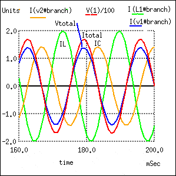
Ángulo de fase cero debido a V en fasetotaly yototal. El rezagado yoLcon respecto a vtotales corregido por una I líderC .
Tenga en cuenta que la corriente total (Itotal) está en fase con el voltaje aplicado (Vtotal), indicando un ángulo de fase cercano a cero. Esto no es una coincidencia. Tenga en cuenta que la corriente en retraso, ILdel inductor habría causado que la corriente total tuviera una fase de retraso en algún lugar entre (Itotal) y yoL. Sin embargo, la corriente principal del capacitor, IC, compensa la corriente retrasada del inductor. El resultado es un ángulo de fase de corriente total en algún lugar entre las corrientes del inductor y del condensador. Además, esa corriente total (yototal) se vio obligado a estar en fase con el voltaje total aplicado (Vtotal), mediante el cálculo de un valor de condensador apropiado.
Dado que el voltaje y la corriente totales están en fase, el producto de estas dos formas de onda, la potencia, siempre será positivo durante un ciclo de 60 Hz, potencia real como en la Figura above. Si el ángulo de fase no se hubiera corregido a cero (PF=1), el producto habría sido negativo donde las porciones positivas de una forma de onda se superponían a las porciones negativas de la otra, como se muestra en la Figura above. La energía negativa se devuelve al generador. No se puede vender; sin embargo, desperdicia energía en la resistencia de las líneas eléctricas entre la carga y el generador. El condensador paralelo corrige este problema.
Tenga en cuenta que la reducción de pérdidas en la línea se aplica a las líneas desde el generador hasta el punto donde se aplica el capacitor de corrección del factor de potencia. En otras palabras, todavía hay corriente circulante entre el condensador y la carga inductiva. Normalmente, esto no es un problema porque la corrección del factor de potencia se aplica cerca de la carga infractora, como un motor de inducción.
Cabe señalar que demasiada capacitancia en un circuito de CA dará como resultado un factor de potencia bajo, al igual que demasiada inductancia. Debe tener cuidado de no corregir demasiado al agregar capacitancia a un circuito de CA. tu también debes sermuyTenga cuidado de utilizar los condensadores adecuados para el trabajo (clasificados adecuadamente para los voltajes del sistema de energía y los picos de voltaje ocasionales causados por rayos, para un servicio de CA continuo y capaces de manejar los niveles esperados de corriente).
Si un circuito es predominantemente inductivo, decimos que su factor de potencia esrezagado(porque la onda de corriente del circuito va por detrás de la onda de voltaje aplicada). Por el contrario, si un circuito es predominantemente capacitivo, decimos que su factor de potencia esprincipal. Por lo tanto, nuestro circuito de ejemplo comenzó con un factor de potencia de 0,705 en retraso y se corrigió a un factor de potencia de 0,999 en retraso.
- REVISAR:
- El factor de potencia deficiente en un circuito de CA puede "corregirse" o restablecerse en un valor cercano a 1, agregando una reactancia paralela opuesta al efecto de la reactancia de la carga. Si la reactancia de la carga es de naturaleza inductiva (que casi siempre lo será), paralelocapacidades lo que se necesita para corregir un factor de potencia deficiente.
Practical power factor correction
Cuando surge la necesidad de corregir un factor de potencia deficiente en un sistema de alimentación de CA, probablemente no podrá darse el lujo de conocer la inductancia exacta de la carga en henrys para utilizarla en sus cálculos. Quizás tengas la suerte de tener un instrumento llamadomedidor de factor de potenciapara indicarle cuál es el factor de potencia (un número entre 0 y 1) y la potencia aparente (que se puede calcular tomando la lectura de un voltímetro en voltios y multiplicándola por la lectura de un amperímetro en amperios). En circunstancias menos favorables, es posible que tenga que utilizar un osciloscopio para comparar las formas de onda de tensión y corriente, midiendo el cambio de fase engradosy calcular el factor de potencia por el coseno de ese cambio de fase.
Lo más probable es que tenga acceso a un vatímetro para medir la potencia real, cuya lectura puede comparar con un cálculo de potencia aparente (multiplicando las mediciones de voltaje total y corriente total). A partir de los valores de potencia verdadera y aparente, se puede determinar la potencia reactiva y el factor de potencia. Hagamos un problema de ejemplo para ver cómo funciona: (Figura below)
{kind=link}
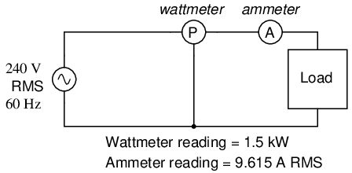
El vatímetro lee la potencia real; El producto de las lecturas del voltímetro y del amperímetro produce la potencia aparente.
Primero, necesitamos calcular la potencia aparente en kVA. Podemos hacer esto multiplicando el voltaje de carga por la corriente de carga:
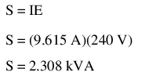
Como vemos, 2.308 kVA es una cifra mucho mayor que 1,5 kW, lo que nos dice que el factor de potencia en este circuito es bastante pobre (sustancialmente menor que 1). Ahora, calculamos el factor de potencia de esta carga dividiendo la potencia real por la potencia aparente:
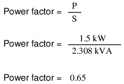
Usando este valor para el factor de potencia, podemos dibujar un triángulo de potencia y a partir de ahí determinar la potencia reactiva de esta carga: (Figura below)
{kind=link}
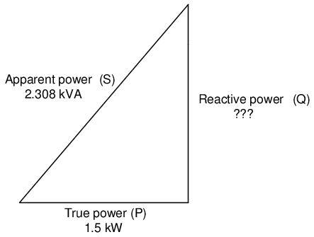
La potencia reactiva se puede calcular a partir de la potencia real y la potencia aparente.
Para determinar la cantidad desconocida (potencia reactiva) del triángulo, utilizamos el teorema de Pitágoras “al revés”, dada la longitud de la hipotenusa (potencia aparente) y la longitud del lado adyacente (potencia verdadera):
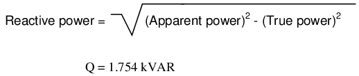
Si esta carga es un motor eléctrico, o cualquier otra carga industrial de CA, tendrá un factor de potencia retrasado (inductivo), lo que significa que tendremos que corregirlo con uncondensadordel tamaño adecuado, cableados en paralelo. Ahora que conocemos la cantidad de potencia reactiva (1,754 kVAR), podemos calcular el tamaño del condensador necesario para contrarrestar sus efectos:
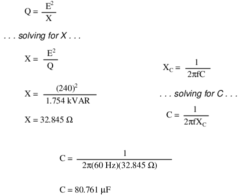
Redondeando esta respuesta a 80 µF, podemos colocar ese tamaño de capacitor en el circuito y calcular los resultados: (Figura below)
{kind=link}
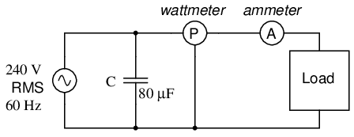
El condensador paralelo corrige la carga retrasada (inductiva).
Un condensador de 80 µF tendrá una reactancia capacitiva de 33,157 Ω, lo que dará una corriente de 7,238 amperios y una potencia reactiva correspondiente de 1,737 kVAR (para el condensadorsolo). Como la corriente del capacitor es 180odesfasado de la contribución inductiva de la carga al consumo de corriente, la potencia reactiva del capacitor se restará directamente de la potencia reactiva de la carga, lo que resultará en:
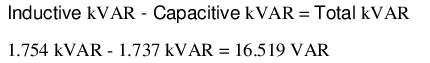
Esta corrección, por supuesto, no cambiará la cantidad de potencia real consumida por la carga, pero dará como resultado una reducción sustancial de la potencia aparente y de la corriente total extraída de la fuente de 240 voltios: (Figura below)
{kind=link}
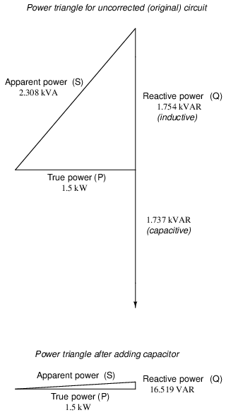
Triángulo de potencia antes y después de la corrección del condensador.
La nueva potencia aparente se puede encontrar a partir de los valores verdadero y nuevo de la potencia reactiva, utilizando la forma estándar del Teorema de Pitágoras:
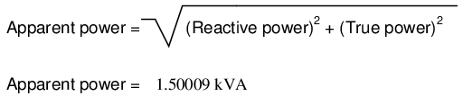
Esto da un factor de potencia corregido de (1,5 kW/1,5009 kVA), o 0,99994, y una nueva corriente total de (1,50009 kVA/240 voltios), o 6,25 amperios, ¡una mejora sustancial con respecto al valor no corregido de 9,615 amperios! Esta corriente total más baja se traducirá en menos pérdidas de calor en el cableado del circuito, lo que significa una mayor eficiencia del sistema (menos desperdicio de energía).
Contributors
Los contribuyentes a este capítulo se enumeran en orden cronológico de sus contribuciones, desde el más reciente hasta el primero. Consulte el Apéndice 2 (Lista de colaboradores) para fechas e información de contacto.
Jason Stark(Junio de 2000): Formato de documentos HTML, que dio lugar a una segunda edición mucho más atractiva.
Lecciones en circuitos eléctricoscopyright (C) 2000-2023 Tony R. Kuphaldt, según los términos y condiciones delCC BY License.